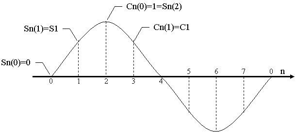
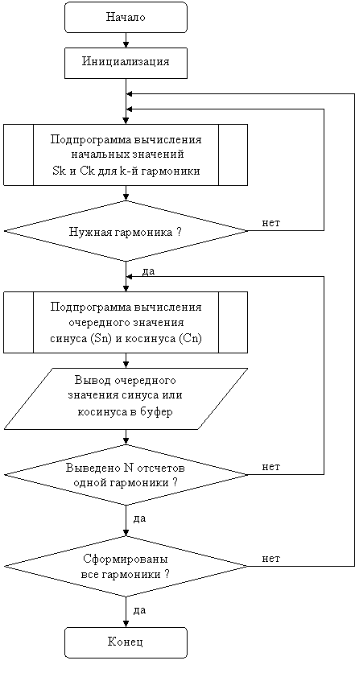

Существует несколько аналитических (вычислительных) методов формирования синусоидальных сигналов. Один из таких методов основан на формулах суммы двух углов:
sin(α+β) = sin(α)·cos(β)+cos(α)·sin(β), cos(α+β) = cos(α)·cos(β)–sin(α)·sin(β). |
(1.1) |
Этот метод применим для последовательной генерации отсчетов одной синусоиды и позволяет вычислить очередной отсчет функции, например sin(an)=sin(a(n-1)+a) через предыдущий sin(a(n-1)).
Использовав a(n-1) в качестве α и a в качестве β и обозначив S1=sin(a), C1=cos(a), Sn(n)=sin(an), Cn(n)=cos(an), получим следующие выражения для вычисления очередных значений синуса и косинуса:
Sn(n) = C1·Sn(n-1)+S1·Cn(n-1), Cn(n) = C1·Cn(n-1)–S1·Sn(n-1). |
(1.2) |
Исходными данными для вычисления первой гармоники (с минимальной возможной частотой) являются следующие значения: Sn(0)=0, Cn(0)=1 – значения синуса и косинуса для нулевого аргумента; N – длина выборки (число отсчетов в первой гармонике); a=2P/N – минимальное приращение аргумента и S1=sin(2P/N), C1=cos(2P/N) – значения синуса и косинуса для минимального аргумента.
На рис. 1.1 показан пример синусоиды с периодом 8 отсчетов (N=8).

Рисунок 1.1 – Синусоида с периодом 8 отсчетов
Учитывая, что исходными значениями для k-й гармоники являются начальный угол β=ak, Sk=sin(ak) и Ck=cos(ak), для их вычисления можно использовать те же самые формулы:Sk(k) = C1·Sk(k-1)+S1·Ck(k-1), Ck(k) = C1·Ck(k-1)–S1·Sk(k-1). |
(1.3) |
Исходными данными для вычисления, как и в выражении (1.2), являются значения Sk(0)=0 и Ck(0)=1.
Расположив данные в памяти следующим образом: Cn, Sn, Ck, Sk, C1, S1, можно использовать одну и ту же подпрограмму с косвенной адресацией для вычисления как отсчетов очередной гармоники Sn и Cn, так и начальных значений Sk и Ck.
Для чего вначале устанавливаем указатель (адрес во вспомогательном регистре) на Ck и вычисляем очередное значение Ck и Sk, а затем на Cn и вычисляем нужное число отсчетов очередной гармоники Sn и Cn:
Sn(n) = Ck·Sn(n-1)+Sk·Cn(n-1), Cn(n) = Ck·Cn(n-1)–Sk·Sn(n-1). |
(1.4) |
При программировании синусоиды данным методом необходимо учесть следующие замечания:
- используя два вспомогательных регистра и двухоперандные команды (Xmem, Ymem), вычисление синуса (косинуса) можно выполнить тремя командами;
- поскольку ассемблер TMS320VC5402 не имеет директив для задания дробных чисел, то дробные числа (формат Q15) переводятся в целые путем умножения на 32768 и используется директива .word;
- поскольку не существует кода для положительной единицы, то для задания cos(0) используется приближенное значение 7FFFh = 1-2-15;
- для того чтобы формируемая синусоида (косинусоида) не затухала, начальное значение C1=cos(2P/N) увеличивается на одну или две единицы младшего разряда и вычисления выполняются в старшей части аккумулятора при установленном режиме коррекции переполнения.
Для исследования цифровых фильтров требуется генератор последовательности синусоид с возрастающей частотой. Схема алгоритма формирования последовательности синусоид на рис. 1.2.

Рисунок 1.2 – Схема алгоритма формирования последовательности синусоид
- Изучить теоретические сведения по теме лабораторной работы (подразд. 1.2).
- Получить у преподавателя задание для выполнения практической части работы.
- Согласно заданию написать, оттранслировать и выполнить программу.
- Продемонстрировать результат трансляции и работы программы преподавателю.
- Оформить и защитить отчет по лабораторной работе.
- Цель работы и исходные данные.
- Описание алгоритма работы программы.
- Листинг программы с комментариями.
- Выводы по работе.